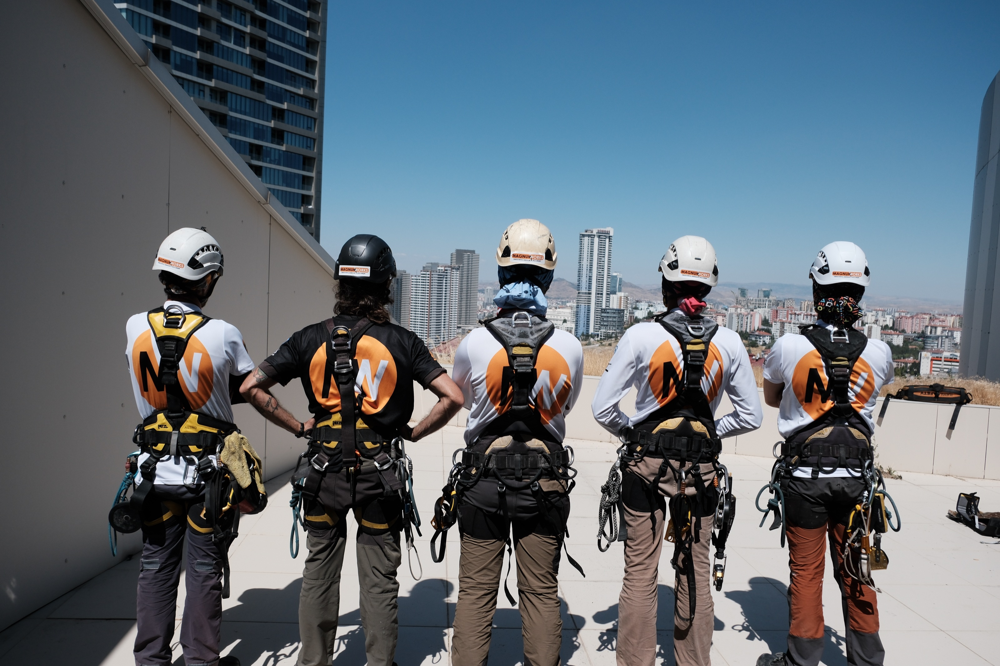
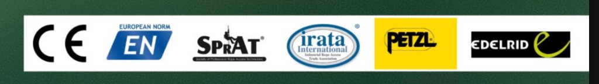

Yöntem
Endüstriyel dağcılık, iple erişimdir. İskele veya vinç kurulmadan yüksekte iş yapılır.

Endüstriyel dağcılık, iple erişimdir. İskele veya vinç kurulmadan yüksekte iş yapılır.
Kısacası yükseklerdeyiz. Cephe, türbin, sahne, yamaç ve tarihi yapıda aynı yöntemle ineriz.
IRATA ve SPRAT pratiği, CE/EN donanım. Çift hat, keşif ve risk analizi işin önüdür.
0+
0+
0%
0+
Referanslar
Katalogdaki kurum ve kuruluşlar bu bölümde. Logoları sonra ekleyeceğiz; şimdilik unvanlar duruyor.
Hizmetler
Süreç
Yükseklik, ankraj, düşüş hattı, hava ve çevre. Fotoğraf ve not; sahaya girmeden yöntem seçilir.
Risk analizi, ekip, malzeme, süre. Çift bağımsız hat ve yedek indirme yolu yazılı hale gelir.
İskele kurulmaz. İş, planlanan pencerede yapılır; bina girişi ve trafik mümkün olduğunca açık kalır.
Kontrol, saha temizliği, kısa rapor. Kalıcı hat veya tekrar iş varsa tarih netleşir.
İşler
Katalogdaki iş kollarından sahadan örnekler. Proje adı ve tarih keşif dosyasına göre eklenir.
Hakkımızda
MagnumWorks, endüstriyel dağcılık ve iple erişim hizmetleri verir. İskele veya vinçin yetersiz kaldığı cephe, enerji, sahne, yamaç ve tarihi yapı işlerinde sahaya ineriz.
Çalışma IRATA ve SPRAT pratiğine, CE/EN donanıma göre yürür. Her iş öncesi keşif ve risk analizi yapılır; kapsam keşif sonrası netleşir.
Hakkımızda
Katalog kapağındaki standartlar: IRATA, SPRAT, CE ve EN. Donanımda Petzl ve Edelrid.
İple erişim teknisyenleri uluslararası IRATA seviyelerine göre çalışır.
Society of Professional Rope Access Technicians pratiği sahada uygulanır.
Kullanılan kişisel koruyucu donanım Avrupa uygunluk ve norm çerçevesindedir.
Her iş öncesi saha keşfi, ankraj kontrolü ve yazılı yöntem.

Hakkımızda
Katalogdaki irtibat: IRATA iple erişim uzmanı.
SSS
İskele ve vinç kurmak yavaş, pahalı ve bazen imkânsızdır. İple erişim ankrajdan inerek aynı noktaya daha kısa sürede ulaşır; giriş ve trafik kapanmaz.
Çalışma çift bağımsız hatladır: biri iş, biri emniyet. Öncesinde keşif ve risk analizi yapılır. Ekip iple erişim eğitimlidir; IRATA pratiklerine uygun çalışılır.
Yükseklik, hava, ankraj kalitesi ve işin türü. Küçük cephe işi saatler; türbin veya viyadük günlere yayılır. Keşif sonrası net tarih verilir.
Metraj + erişim zorluğu + ekip + süre. Keşif olmadan sabit paket yok. Formdaki konum ve yükseklik ilk aralığı konuşmak için yeter.
Plaza, köprü, türbin, sahne, yamaç, ağaç, silo, minare. Vinç veya iskele uymuyorsa keşif isteriz; ip uygunsa işimizdir.
İletişim
ve teklif. İşin türü, konum ve tahmini yükseklik yeterli.